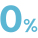
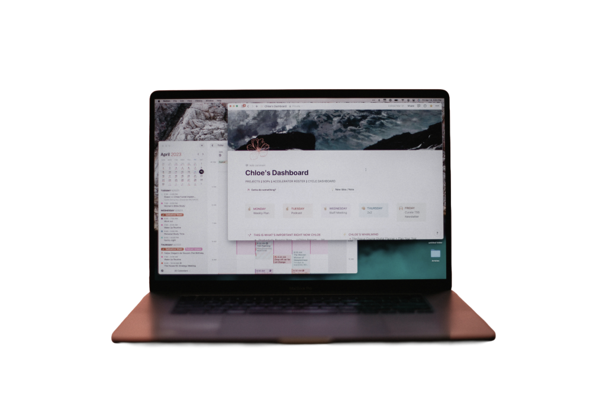
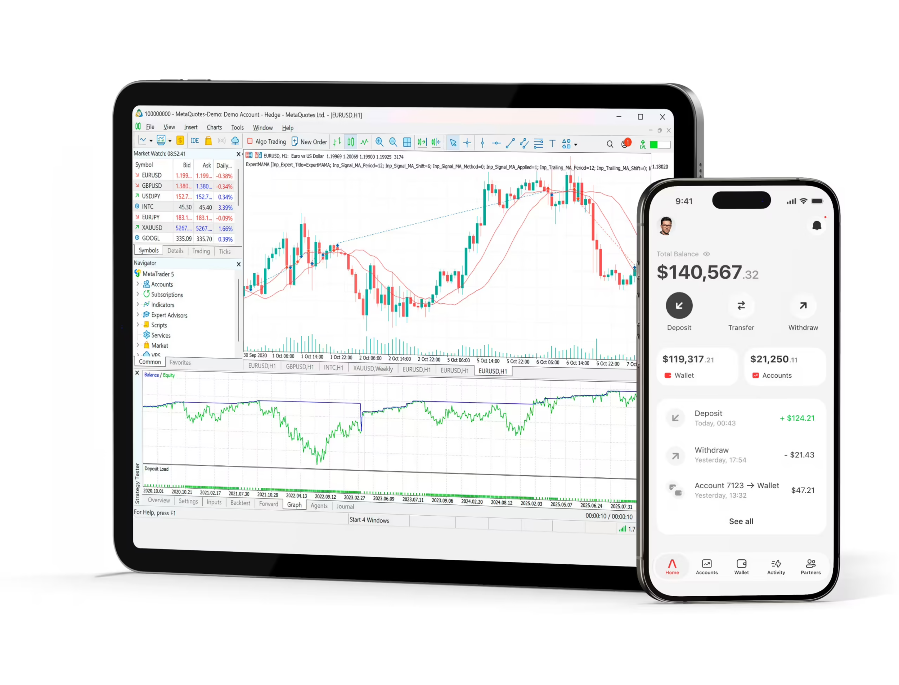
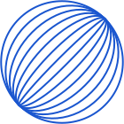
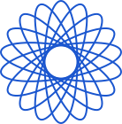

우리 기술은 어떤 에너지의 미래를 만들고 있나요?
기술과 제품은 분명하지만, 바꾸려는 미래를 한 문장으로 설명하기 어렵습니다.
G임팩트 비즈니스 코칭의 에너지 산업 특화 모델 · 시범 운영 중
에너지 산업의 시장·정책과 기업의 사업모델을 분석합니다.
대표가 방향을 결정하고, 비즈니스 코치는 근거를 점검합니다.
성장 로드맵을 세우고 분석할 사람이 부족한 에너지 기업이 자주 겪는 일입니다.
기술과 제품은 분명하지만, 바꾸려는 미래를 한 문장으로 설명하기 어렵습니다.

사업의 내용보다 자료를 다시 만드는 일에 시간이 듭니다.

수익구조, 정책금융, 투자 대응 가운데 어디서 시작할지 정하기 어렵습니다.
흩어진 기록을 다시 모으느라 다음 판단이 늦어집니다.
G임팩트 비즈니스 코칭의 보고서와 도구에 에너지 기업의 정책·시장·인증 환경 분석이 더해집니다.
산업 맥락
정책·제도, 시장, 인증과 경쟁 환경을 기업의 사업과 연결해 살펴봅니다.
사업화·자금조달
지원사업과 자금조달 경로를 검토하고 사업계획과 IR 준비 방향을 정리합니다.
성과·ESG 보고
목표와 성과 기록을 바탕으로 ESG 전략 보고서에 필요한 내용을 정리합니다.

어떤 상품이든 담당 코치 한 명이 회차마다 대표와 직접 만나 진행합니다.
Growth 과정

사업을 둘러싼 환경과 우리 강점·약점을 정리합니다.
BM분석 보고서
Growth 과정

사업을 둘러싼 환경과 우리 강점·약점을 정리합니다.
BM분석 · BM전략 보고서
Growth 과정
BM·전략 코칭을 포함하고, 목표를 세운 뒤 격주로 함께 점검합니다.
BM분석 · BM전략 · 목표 보고서
코치와 만나는 진단·코칭 사이에 AI엔진이 분석해 보고서를 만듭니다.
다음 단계 상품은 앞 단계를 모두 포함합니다.
분석
BM 코칭전략
전략 코칭자금조달
자금조달 자동화연결
투자연계 · 유료 고객 혜택BM분석 보고서
BM전략 보고서
목표 보고서
BM분석 보고서가 있으면 전략 진단부터 시작할 수 있습니다.
6개월 뒤 재진단 · 언제든 BM 진단부터 다시
선택 · 자금조달 자동화(AX) · BM 코칭 이상 원격 셋팅 회차 › BM분석 보고서를 바탕으로 지원사업·IR 자동화 도구 설치·사용법 안내
소셜미션과 브랜드를 정리하고 ESG로 이어 갑니다.
ESG 코칭은 소셜브랜드 코칭을 포함하며, 첫 회차는 코치가 AI엔진과 함께 진행합니다.
Impact 과정
소셜미션과 브랜드를 정리합니다.
Impact 과정
ESG를 진단하고 개선 방향을 정리합니다.
에너지 에디션은 배터리 제조와 VPP(가상발전소) 분야 실기업 실증을 거쳤습니다.
54곳코칭·진단을 받은 기업
(2026.10.18 기준)
870건G임팩트엔진 분석 결과물
(2026.10.15 기준)
숫자는 에너지 에디션을 포함한 G임팩트 비즈니스 코칭 전체 실적입니다.